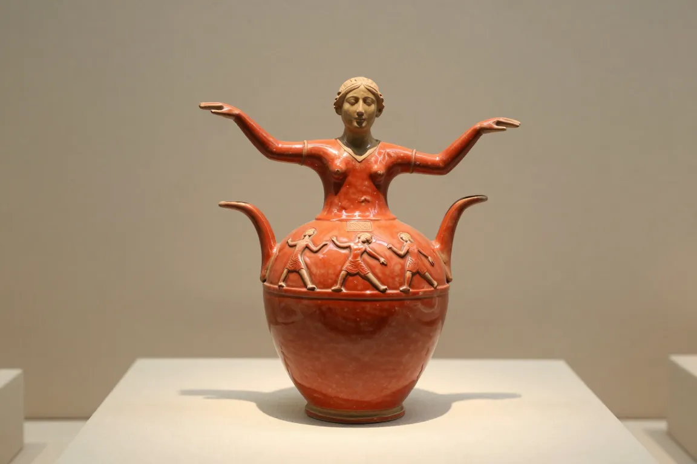

Красноглянцевая столовая посуда римского мира. Гончары Ареццо вдавливают тонкую глину в штампованные формы, покрывают вещи ангобом из очень мелких частиц и обжигают до глянцевого коралло-красного.

Главная идея
Красный блеск даёт тонкий ангоб, а не глазурь: гончар сортирует глину по размеру частиц, наносит на горшок тонкий верхний слой и обжигает в чистом воздухе.
Принципы дизайна
Отстаивайте глину в воде и оставляйте для ангоба только самый тонкий верхний слой, с частицами меньше 1 микрона.